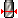

<table valign=middle><tr><td height=24 width=24></td><td><div id="restMaterialCutterDiameter"><h3 id="restMaterialCutterDiameter">Диаметр инструмента для остаточного материала</h3>
</td></tr></table>
<p>Указание диаметра инструмента для обработки остаточного материала.</p>
</div>